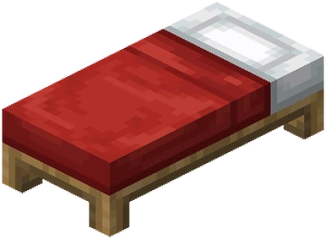

Todo lo necesario para jugar, explicado sin rodeos. También puedes abrir cada sección desde /menu.
Primeros pasos
Entra y llega al survival.
Conéctate a play.sillamc.es. En Bedrock usa el puerto 19132. Funciona desde la versión 1.7 hasta la 1.21.10.
Regístrate o inicia sesión siguiendo el mensaje del chat.
Abre /menu: desde ahí tendrás casas, warps, economía, trabajos y ajustes.
Consejo: guarda /menu. Es el acceso más rápido a casi todo SillaMC.
▶
Vídeo: tu primer día en SillaMCEspacio preparado para el tutorial oficial grabado dentro del servidor.
El menú
Escribe /menu y tienes casi todo SillaMC en una sola pantalla.
Cada categoría del menú tiene su propio icono, para que sea fácil reconocerlas de un vistazo:
Casas: guarda y viaja a tus lugares favoritos.

Protecciones: gestiona tus zonas de ProtectionStones.
Economía: mira tu saldo y paga a otros jugadores.
Trabajos: elige un oficio y sigue tu progreso.
Subastas: compra y vende objetos entre jugadores.
Warps: viaja rápido a los lugares públicos.
Debajo tienes cada una de estas secciones explicada con más detalle — y con el mismo icono, para que sepas siempre dónde estás.
Casas
Guarda lugares y vuelve a ellos desde un menú interactivo.
Colócate en el lugar que quieras guardar.
Escribe /hogarcrear <name> o /sethome <name>. El nombre es obligatorio.
Abre /menu → Casas. Verás cada casa con mundo y coordenadas.
Haz clic en una casa para teletransportarte. Para borrarla usa /delhome <name>.
Usa nombres claros: base, mina o granja.
Protecciones
Protege tu terreno con ProtectionStones: cómo conseguir el bloque, viajar a tus zonas y gestionarlas.
1. Consigue tu bloque de protección
Escribe /ps get 20x20. Puedes hacerlo tantas veces como quieras. El bloque es un Bloque de Hueso.
Coloca el bloque en el suelo, en el centro de la zona que quieres proteger.
Al colocarlo se crea la zona automáticamente a tu nombre.
Cuántas puedes tener a la vez según tu rango: Taburete 1 · Sillón 3 · Trono 5. /ps get 20x20 no tiene límite, el límite es de cuántas puedes tener activas a la vez.
2. Viaja a tus protecciones
Lo más fácil: abre /menu → Protecciones. Verás la lista con nombre, mundo y coordenadas de cada una, estés donde estés.
Haz clic en una para teletransportarte al instante, aunque estés en otro mundo.
Por comandos: /ps home te lleva a tu protección si estás dentro del mismo mundo, o /ps home <name> si le pusiste nombre con /ps name.
/ps tp <name> hace lo mismo que /ps home pero puede usarse para ir a protecciones donde eres miembro, no solo dueño.
Para renombrar una protección y encontrarla más fácil luego: /ps name <newname> estando dentro de ella.
3. Consulta y gestiona una protección
/ps info — muestra dueño, miembros y datos de la zona en la que estás.
/ps list — lista todas tus protecciones con su ID.
/ps count — cuántas tienes y cuál es tu límite según tu rango.
/ps add <username> — deja entrar y construir a alguien sin hacerlo dueño (/ps remove <username> para quitarlo).
/ps addowner <username> — añade otro dueño con los mismos permisos que tú (/ps removeowner <username> para quitarlo).
⚠️ Ojo con /ps addowner: le da a esa persona el mismo control total que tú sobre la protección (puede echarte, cambiar flags, incluso desproteger la zona). Es lo mismo que darle las llaves de tu casa. Para dejar entrar y construir a alguien de confianza, usa /ps add — casi nunca hace falta usar /ps addowner.
4. Flags: qué se puede hacer dentro de tu protección
/ps info flags — mira qué flags tiene tu protección ahora mismo.
/ps flag <flag> <valor> — cambia una flag (usa null como valor para quitarla y volver al valor por defecto).
mob-spawning deny/allow — si aparecen o no mobs hostiles dentro.
creeper-explosion, wither-damage, ghast-fireballdeny/allow — si esos mobs pueden destruir bloques dentro.
greeting / farewell <mensaje> — mensaje al entrar/salir de tu protección.
Por defecto, al crear la protección ya viene con PvP y TNT bloqueados y sin daño de creepers/wither/ghast, para que nadie te destroce la base sin querer. Puedes cambiarlo si quieres jugar distinto.
5. Oculta el bloque y desprotege
/ps hide — el bloque protector se vuelve invisible (sigue protegiendo igual), útil para que no se vea feo en tu casa.
/ps unhide — lo vuelve a mostrar.
El indicador verde/rojo del menú te dice si está oculto o visible sin tener que comprobarlo.
/ps unclaim — elimina la protección para siempre y te devuelve el bloque (o /ps unclaim <name> desde lejos, sin estar dentro).
Antes de hacer /ps unclaim asegúrate: no se puede deshacer y cuenta para tu límite si quieres protegerla otra vez.
6. Vídeo: todo lo de /ps en 4 minutos
0:00
4:18
Salta a lo que necesitesPulsa un minuto y el vídeo va directo a esa parte.
Economía y pagos
Consulta tus SillaCoins y paga a otros jugadores con seguridad.
Abre /menu → Saldo para ver tus SC actuales.
Elige Pagar a un jugador y selecciona a quién.
El chat preparará /pay <username> <amount>; escribe la cantidad y envíalo.
Comprueba siempre el nombre y la cantidad antes de confirmar.
Las SillaCoins bloqueadas obtenidas mediante anuncios pueden gastarse, pero no enviarse a otros jugadores.
También puedes ver tu saldo sin entrar al juego: entra a tu panel web, se actualiza en vivo.
Panel web
Todo lo importante de tu cuenta, sin abrir el juego.
Entra a panel.sillamc.es. La primera vez, escribe /cuentaweb en el juego para conseguir un código de 6 dígitos.
Con el código entras al momento — no hace falta contraseña, aunque puedes crear una para la próxima vez.
Verás tu saldo de SillaCoins en vivo, tu nivel de cuenta y el pase de temporada con sus 50 niveles.
En "Misiones" ves el progreso de tus misiones de hoy y de esta semana, sin tener que escribir /sillapass.
Cuando alcances un nivel del pase, pulsa "Reclamar" para recibir la recompensa cuando tú quieras (útil si tienes el inventario lleno).
Ojo: la contraseña del panel web es distinta a la de /register en el juego — son dos cuentas separadas. Si no quieres crear una, siempre puedes volver a pedir un código nuevo con /cuentaweb.
Trabajos
Gana experiencia y SC realizando actividades normales.
Abre /menu → Trabajos.
Jobs Reborn mostrará los trabajos disponibles y sus condiciones.
Elige el que encaje contigo: minero, leñador y los demás trabajos configurados.
Tu botón del menú cambiará de icono según tu trabajo principal y mostrará nivel/progreso.
Puedes cambiar de oficio, pero revisa antes las consecuencias que muestre Jobs Reborn.
Casa de subastas
Compra y vende objetos entre jugadores.
Abre /menu → Subastas o escribe /ah.
Revisa objeto, cantidad y precio antes de comprar.
Para vender, sostén el objeto y usa la orden de venta indicada por la ayuda de /ah.
Ten en cuenta que cada venta aplica el impuesto configurado del servidor.
Nunca confirmes una compra solo por el nombre: revisa también encantamientos y descripción.
Warps
Viajes rápidos a lugares públicos de SillaMC.
Abre /menu → Warps.
Verás los destinos disponibles con mundo y coordenadas.
Haz clic para viajar a Lobby, Spawn, Tienda u otros warps que se añadan.
La tienda todavía está en preparación; el menú quedará listo para llevarte en cuanto se abra.